총 37개 / 성공 37개 / 실패 0개
Emu API: http://127.0.0.1:18789
| 기능번호 | 목적·요구사항 | 화면구성 | UI요소(버튼·입력·토글 등) | 관련 함수 | 상태 | 스크린샷 |
|---|---|---|---|---|---|---|
LO_01_01/login |
앱 최초 진입 또는 로그아웃 후 인증 방식 선택. Google/Apple/Kakao SNS 로그인 또는 게스트(로컬) 모드 진입 제공. [요구] 인증·계정 관리 |
SNS 로그인 버튼(Google/Apple/Kakao), 게스트 로그인 버튼, Easy Login 시트(QA용) | [AppBar] Login [버튼] EASY LOGIN (GOOGLE/APPLE/KAKAO) → Easy Login 시트 오픈 [버튼] CREATE ACCOUNT → Lo0201SignUpIntroScreen [버튼] EXISTING LOGIN → SignInOneScreen [버튼] CONTINUE AS GUEST → guestMode=true, /home [시트] Easy Login: ListTile Continue with Google/Apple/Kakao, TextButton Close [이미지] splash2 (앱 로고) |
LoginChoiceScreen.build() |
ok | 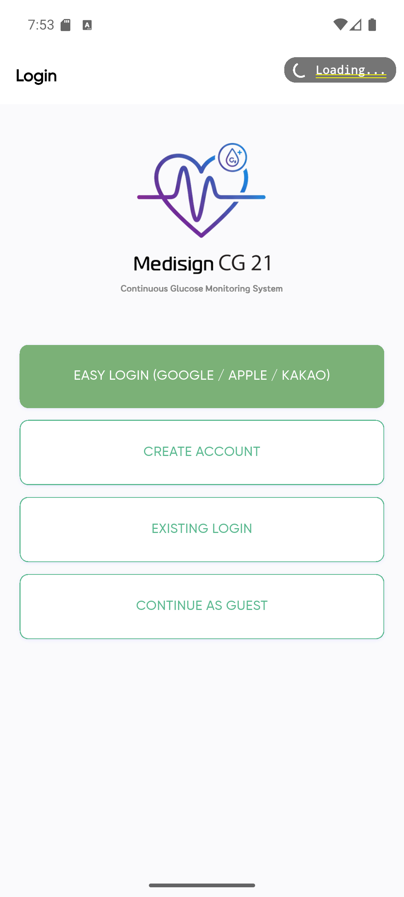 |
LO_01_02/lo/01/02 |
Google OAuth를 통한 회원 인증. Web 클라이언트 ID 기반 인증 후 토큰 저장 및 메인 화면 전환. [요구] 인증·계정 관리 |
Google Sign-In 진행 상태, 결과 표시 영역 | [표시] Google Sign-In 진행 상태 [결과] 인증 성공/실패 안내 |
Lo0102GoogleLoginScreen |
ok | 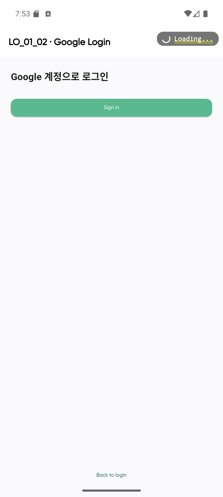 |
LO_01_03/lo/01/03 |
Apple Sign-In을 통한 회원 인증. iOS/Android 지원. [요구] 인증·계정 관리 |
Apple 인증 진행 상태, 결과 표시 영역 | [표시] Apple Sign-In 진행 상태 [결과] 인증 성공/실패 안내 |
Lo0103AppleLoginScreen |
ok | 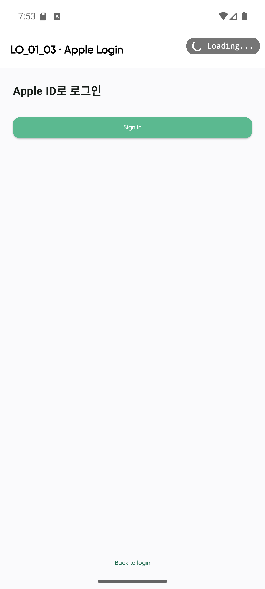 |
LO_01_04/lo/01/04 |
Kakao OAuth를 통한 회원 인증. 네이티브 앱 키 기반. [요구] 인증·계정 관리 |
Kakao 로그인 진행 상태, 결과 표시 영역 | [표시] Kakao Sign-In 진행 상태 [결과] 인증 성공/실패 안내 |
Lo0104KakaoLoginScreen |
ok | 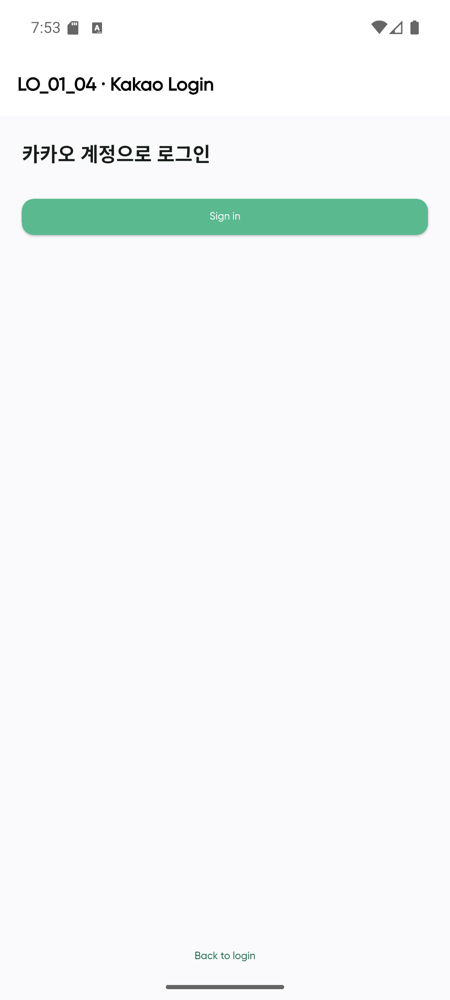 |
LO_02_01/lo/02/01 |
신규 회원 가입 플로우 진입. 약관 동의→전화 인증→회원정보 입력→가입 완료 순서로 진행. [요구] 인증·계정 관리 |
가입 단계 안내, 약관/전화인증/정보입력 선택 | [안내] 가입 플로우 단계 [버튼] 약관/전화인증/정보입력 선택 |
Lo0201SignUpIntroScreen |
ok | 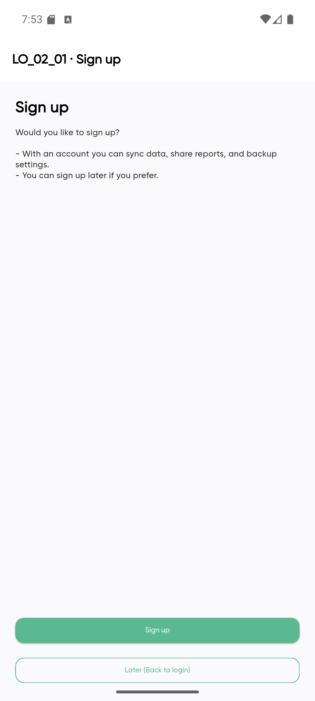 |
LO_02_02/lo/02/02 |
가입 필수 약관 확인 및 동의. 동의 체크 후 다음 단계 진행. [요구] 인증·계정 관리 |
약관 목록, 체크박스, 동의/다음 버튼 | [체크박스] I agree to receive CGMS alert notifications (sc0101Consent) [버튼] 동의/다음 → 다음 단계 |
Lo0202TermsScreen |
ok | 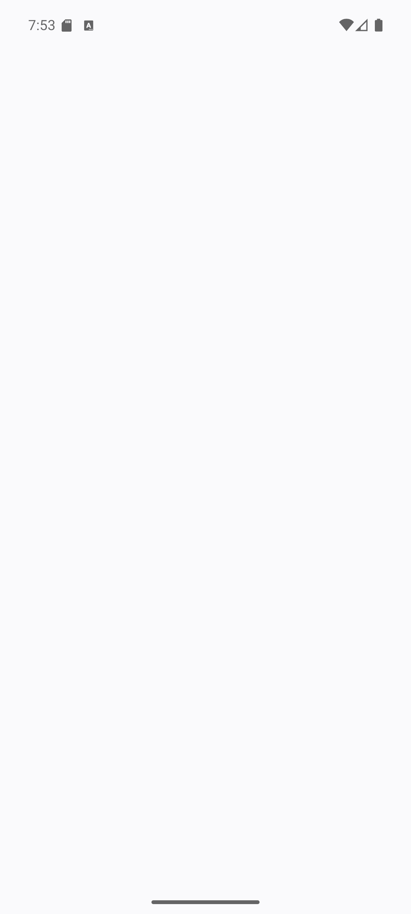 |
LO_02_03/lo/02/03 |
전화번호 기반 본인 인증. 인증번호 발송·입력·검증. [요구] 인증·계정 관리 |
전화번호 입력, 인증코드 입력, 인증 완료 표시 | [입력] 전화번호 (TextField) [입력] 인증코드 (TextField) [버튼] 인증번호 발송 [버튼] 인증 완료 |
Lo0203PhoneVerifyScreen |
ok | 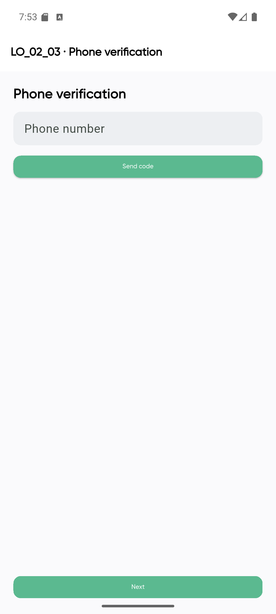 |
LO_02_04/lo/02/04 |
가입 필수 정보(이름, 생년월일 등) 입력. 서버 전송 후 가입 완료. [요구] 인증·계정 관리 |
이름/생년월일/성별 등 입력 필드, 저장 버튼 | [입력] 이름 (TextField) [입력] 생년월일 (DatePicker) [입력] 성별 (Radio/Dropdown) [버튼] 저장/다음 |
Lo0204UserInfoWrapperScreen |
ok | 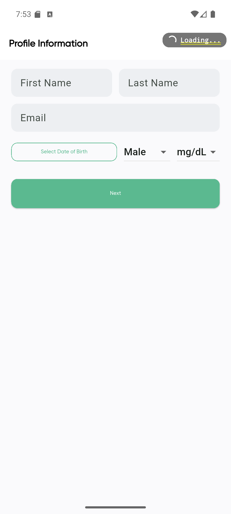 |
LO_02_05/lo/02/05 |
회원가입 완료 확인. 메인 또는 로그인 화면으로 진입. [요구] 인증·계정 관리 |
완료 메시지, 다음 단계 버튼 | [표시] 가입 완료 메시지 [버튼] 메인/로그인 진입 |
Lo0205SignUpCompleteScreen |
ok | 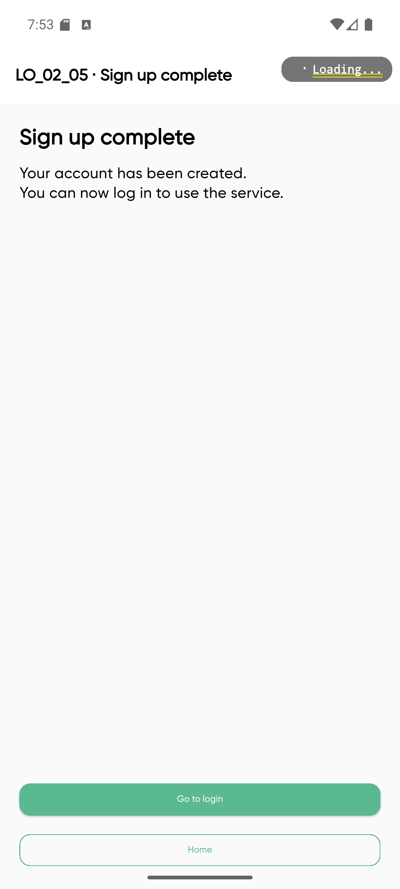 |
GU_01_01/gu/01/01 |
현재 혈당 수치·추세·센서 잔여일수 표시. High(AR_01_03)/Low(AR_01_04) 설정값에 따른 차트 기준선 반영. glucoseUnit(mg/dL·mmol/L) 적용. [요구] 1. 블루투스 연결 / 4. 미구현(고·저 라인) |
혈당 카드, 추세 화살표, 차트, 센서 잔여일, 하단 6탭(Home/Trend/Report/Sensor/Alarm/Settings) | [카드] 혈당 수치 (mg/dL 또는 mmol/L), 추세 화살표(up/down/flat) [차트] LineChart (High/Low 기준선 반영) [표시] Last measured, Remaining Xd Xh [하단탭] Home, Trend, Report, Sensor, Alarm, Settings [FAB/오버레이] 이벤트 추가 (MemoModal) |
MainDashboardPage.build() |
ok | 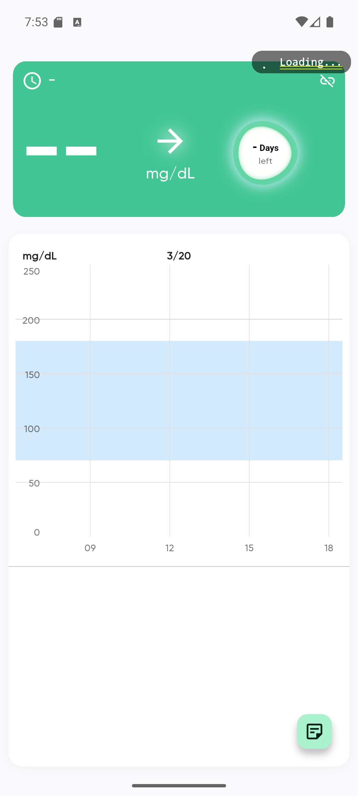 |
TG_01_01/tg/01/01 |
기간별 혈당 추세·통계 확인. Time in Range, 평균, GMI 등. glucoseUnit 반영. [요구] 기간별 통계·추세 |
기간 선택(1/7/30/90일), 통계 카드, 추세 차트 | [탭] 1 day, 7 days, 30 days, 90 days [카드] Time in Range, Average, StdDev, Hypo/Hyper, GMI [차트] 기간별 혈당 추이 |
TrendTabPage.build() |
ok | 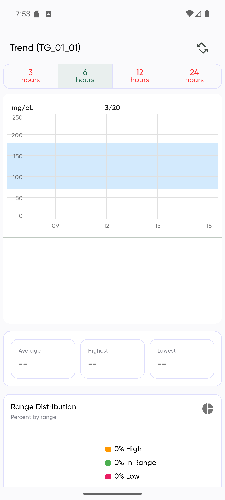 |
TG_01_02/tg/01/02 |
가로 모드 확대 차트. 상세 혈당 추이 확인. [요구] 기간별 통계·추세 |
확대된 차트 뷰, Y축 단위 반영 | [차트] 가로 확대 뷰 [Y축] glucoseUnit 반영 |
Tg0102ChartLandscapeScreen |
ok | 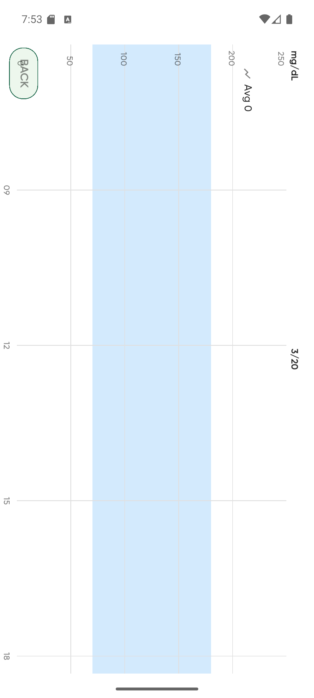 |
RP_01_01/rp/01/01 |
Glucose Report. 기간별(1/7/30/90일) 사용자 프로필·Key Metrics(Time in Range, Average, StdDev, Hypo/Hyper, GMI)·Range Distribution 차트. Share/Export 제공. [요구] QA_검수 17번 Report 탭 |
기간 탭, Profile 카드, Summary KPI, Range Distribution 파이차트, Share·Export 버튼 | [헤더] Glucose Report (RP_01_01) [탭] 1 day, 7 days, 30 days, 90 days (기간 선택) [카드] Profile: username, email, phone, Age, Gender [버튼] Share → /sc/07/01 [버튼] Export [카드] Summary: Time in Range, Average, StdDev/CV, Hypo/Hyper, GMI [차트] Range Distribution (파이) |
CgmsReportScreen.build() |
ok | 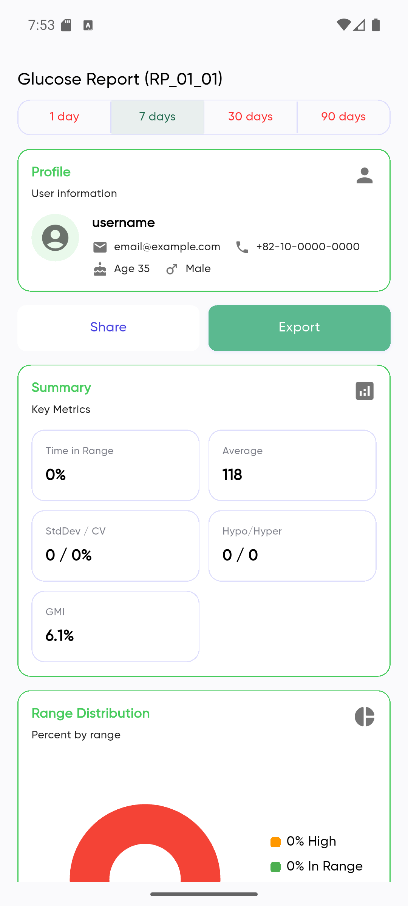 |
ME_01_01/me/01/01 |
식사·운동·인슐린 등 이벤트 기록 추가·편집. 메모·타입 선택. [요구] 이벤트 기록 |
이벤트 타입 선택, 메모 입력, 저장 버튼 | [선택] 이벤트 타입 (식사/운동/인슐린 등) [입력] 메모 (TextField) [버튼] 저장 |
Me0101EventEditorScreen |
ok | 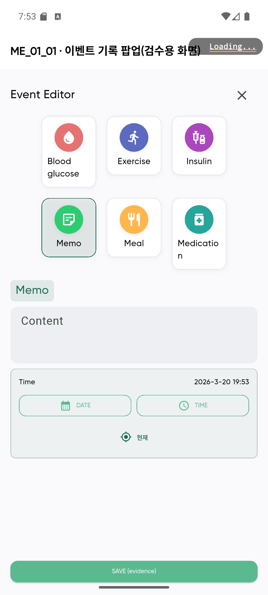 |
PD_01_01/pd/01/01 |
eqsn별 과거 센서 데이터 조회. 기간·센서 선택. [요구] 과거 데이터 |
eqsn별 리스트, 기간별 데이터 범위, 차트/통계 | [리스트] eqsn별 센서 카드 [표시] 기간별 데이터 범위 [버튼] 새로고침 |
Pd0101PreviousDataScreen |
ok | 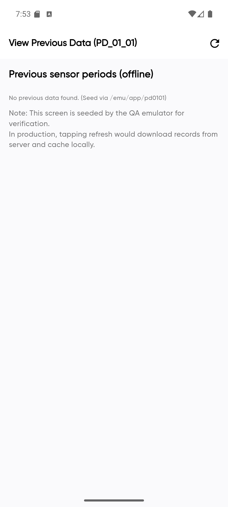 |
SC_01_01/sc/01/01 |
최초 센서 등록 전 권한 동의 및 혈당 범위(저·고) 임계값 설정. sc0101Consent, sc0101Low, sc0101High 저장. [요구] 블루투스 연결 흐름 |
권한 동의, Low/High 범위 입력, 다음 버튼 | [체크박스] I agree to receive CGMS alert notifications (sc0101Consent) [입력] Low (40~120, num) [입력] High (120~300, num) [버튼] Save → sc0101Consent, sc0101Low, sc0101High, alarmsCache 갱신 |
Sc0101PermissionRangeScreen |
ok | 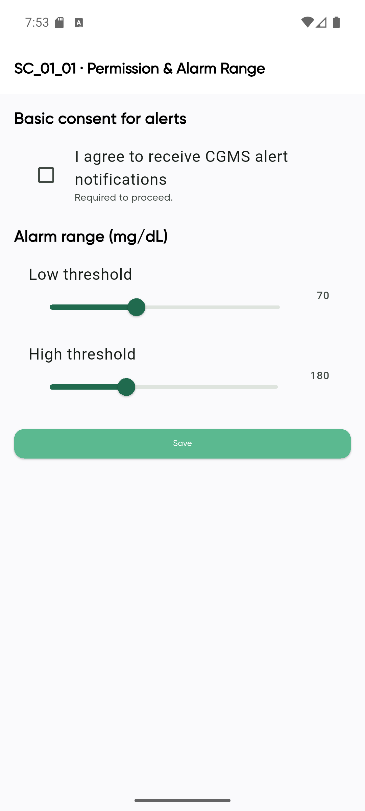 |
SC_01_03/sc/01/03 |
NFC 기반 센서 연결 가이드. NFC 태깅으로 기기 인식. [요구] 블루투스 연결 |
NFC 안내, 태깅 동작 상태 | [안내] NFC 태깅 가이드 [표시] NFC 인식 상태 |
Sc0103NfcScanScreen |
ok | 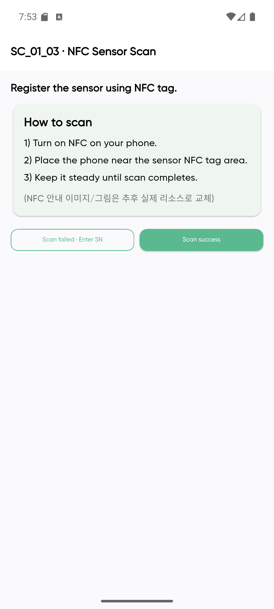 |
SC_01_04/sc/01/04 |
QR 스캔 자동 접속. QR 형식 #1;#2;#3(ADV이름;ID+MAC;일련번호). MAC 기반 BLE 연결 후 워밍업 자동 이동. Register Device=SAVE&SYNC와 동일(최초 eqsn DB 저장). [요구] 1-2. QR 스캔 자동 접속 / Register Device=SC_04_01 SAVE&SYNC |
카메라 뷰, Detected Result(Model, Manufactured, Serial), Register Device 버튼 | [카메라] MobileScanner (QR 스캔) [표시] Detected Result: Model, Manufactured, Sample Flag, Serial [버튼] Register Device → eqsn·registeredDevices 저장, BLE 연결 시작 |
SensorQrConnectPage |
ok | 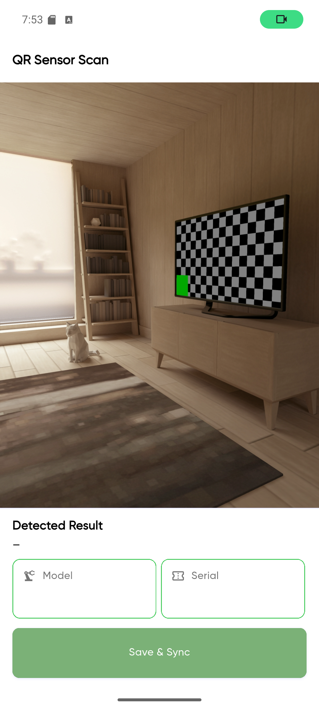 |
SC_01_05/sc/01/05 |
수동 접속 시 시리얼번호(5자리) 입력. SN 미입력 시 MAC 대체 사용. 입력 시 기존 manual_sn 항목 덮어쓰기. [요구] 1-1. 수동 접속 / SC_04_01 시리얼 등록 |
SN 입력 필드, 저장 버튼 | [입력] Serial Number (TextField, 5자리) [버튼] Save → eqsn, registeredDevices(manual_sn 덮어쓰기) [표시] SN 미입력 시 MAC 대체 사용 |
Sc0105ManualSnScreen |
ok | 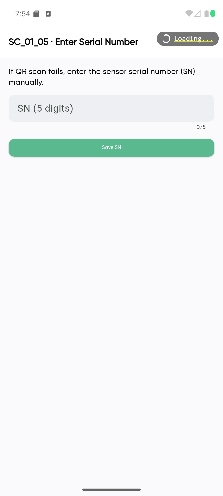 |
SC_01_06/sc/01/06 |
최초 센서 연결 후 30분 워밍업 카운트다운. 연결 완료 시 자동 진입. 시작/종료 시각 표시. [요구] 1-2. 연결 완료 시 워밍업 페이지 자동 이동 |
Warming up 진행률, 남은 시간(MM:SS), Started at / Ends at | [프로그레스] LinearProgressIndicator (남은 시간) [표시] Warming up MM:SS, Started at, Ends at |
Sc0106WarmupScreen |
ok | 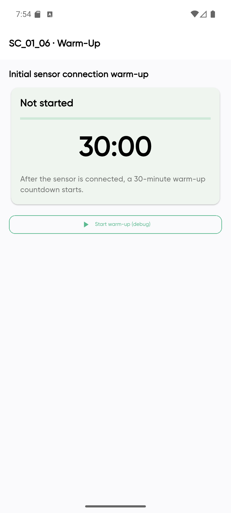 |
SC_02_01/sc/02/01 |
Sensor 탭. Usage period, Remaining, Start Time. Scan & Connect(수동 BLE), Serial Number, Start Time, Share Data, How to remove 링크. [요구] 1. 블루투스 연결 / 2-1. Start Time 동기화 |
센서 카드, Status, Scan & Connect, Serial Number, Start Time, Share, Remove 링크 | [카드] Usage period: LinearProgressIndicator, Remaining Xd Xh, Start [링크] Status (SC_03_01) [링크] Scan & Connect (SC_01_01 BLE) [링크] Serial Number (SC_04_01) [링크] Start Time (SC_05_01) [링크] Share Data (/sc/07/01) [링크] How to remove (SC_08_01) |
SensorPage.build() |
ok | 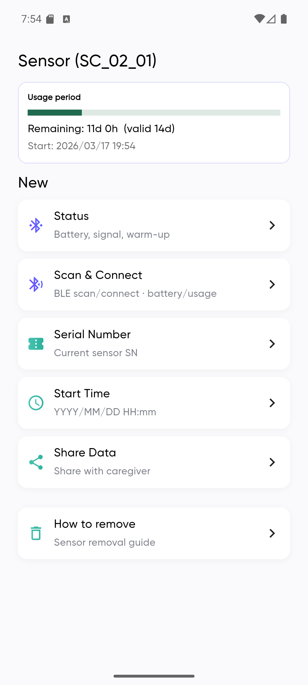 |
SC_03_01/sc/03/01 |
BLE 연결 상태·패킷 수·배터리 등. BleService 연동. [요구] QA_검수 15번 Status(SC_03_01) |
연결 on/off, rxCount, deviceName, battery, rssi | [토글] Enable connection (BleService 연동) [표시] deviceName, battery, rssi, rxCount [표시] Usage period, Start at |
SensorStatusPage |
ok | 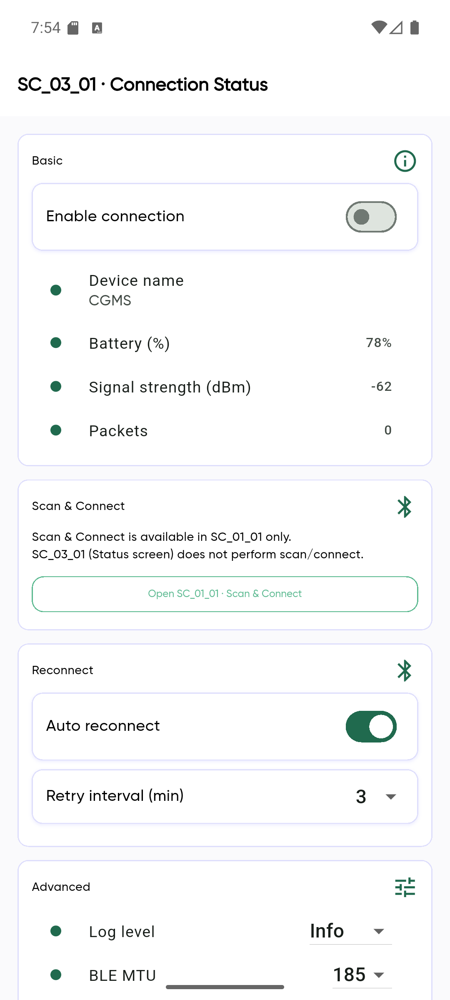 |
SC_04_01/sc/04/01 |
SC_04_01 Serial Number. SAVE & SYNC로 eqsn DB 저장. QR Register Device와 동일 기능. [요구] Register Device=SAVE&SYNC 동일 |
시리얼 정보, SAVE & SYNC 버튼 | [입력] Serial Number (TextField) [표시] Model, Year, Sample, Serial (파싱 결과) [버튼] SAVE & SYNC → eqsn 저장, 로컬DB 초기화, 서버 동기화 |
SensorSerialPage |
ok | 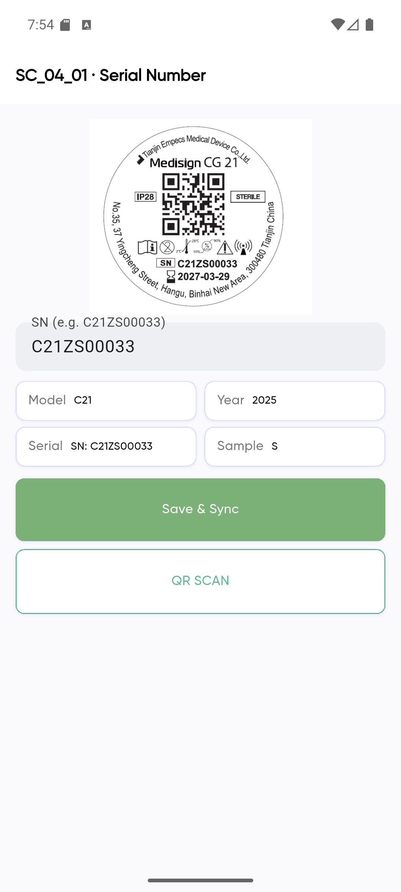 |
SC_05_01/sc/05/01 |
센서 시작 시각 표시. 요구: BT 연결 시각으로 자동 동기화(사용자 저장 불필요). [요구] 2-1. Start Time 자동 동기화 |
시작일시 표시 | [표시] 시작일시 YYYY/MM/DD HH:mm | SensorStartTimePage |
ok | 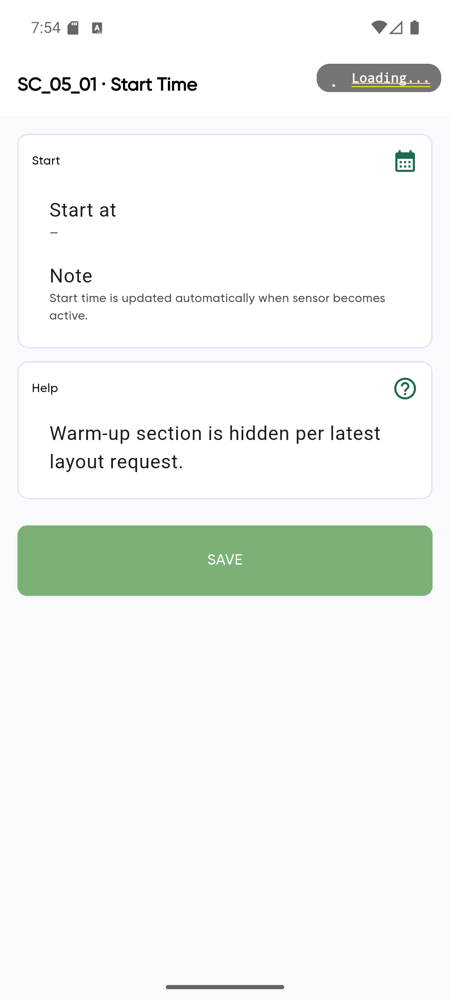 |
SC_06_01/sc/06/01 |
NFC 재연결 절차 안내. [요구] 재연결 가이드 |
재연결 단계 안내 | [안내] NFC 재연결 단계 | SensorReconnectNfcPage |
ok | 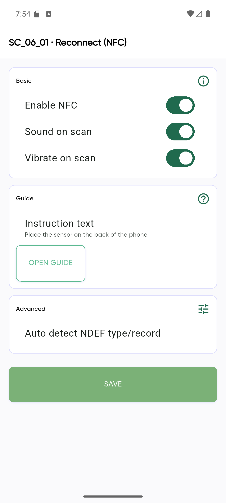 |
SC_06_02/sc/06/02 |
QR 재연결 절차 안내. [요구] 재연결 가이드 |
QR 재스캔 절차 | [안내] QR 재스캔 절차 | Sc0602QrReconnectScreen |
ok | 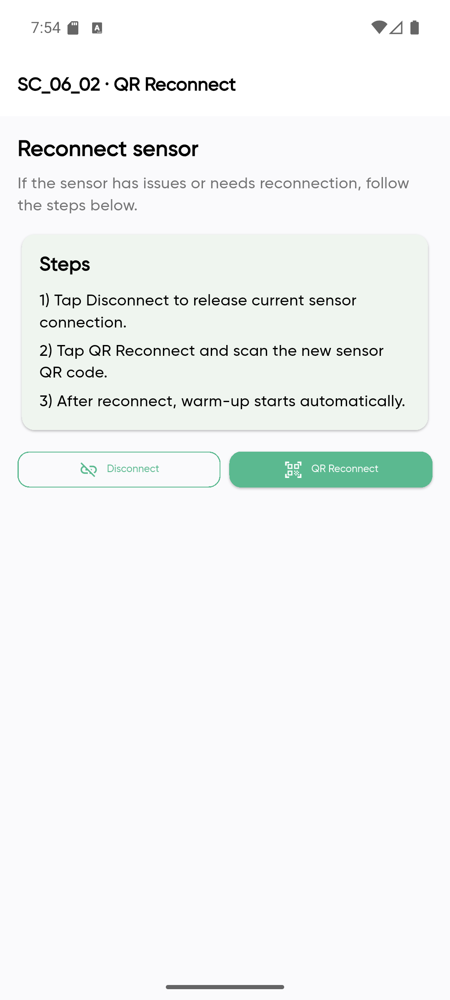 |
SC_07_01/sc/07/01 |
혈당 데이터 공유 설정. 기간·포맷·대상 선택. [요구] Share Data |
공유 기간, PDF/기타 포맷, 이메일/SMS 옵션 | [선택] 기간(1D/7D/30D) [선택] 포맷(PDF 등) [토글] Item summary, distribution, graph, user profile [토글] Method email, SMS [버튼] 공유 실행 |
Sc0701DataShareScreen |
ok | 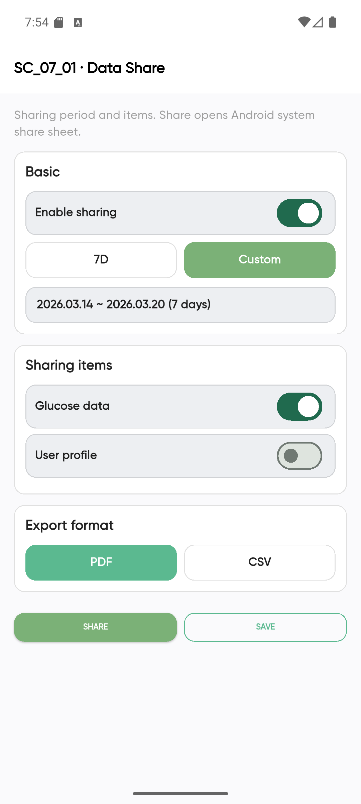 |
SC_08_01/sc/08/01 |
센서 해제·삭제. How to remove. [요구] How to remove |
삭제 확인 다이얼로그, 완료 | [안내] 센서 제거 가이드 [버튼] 삭제 확인 |
SensorRemovePageWrapper |
ok | 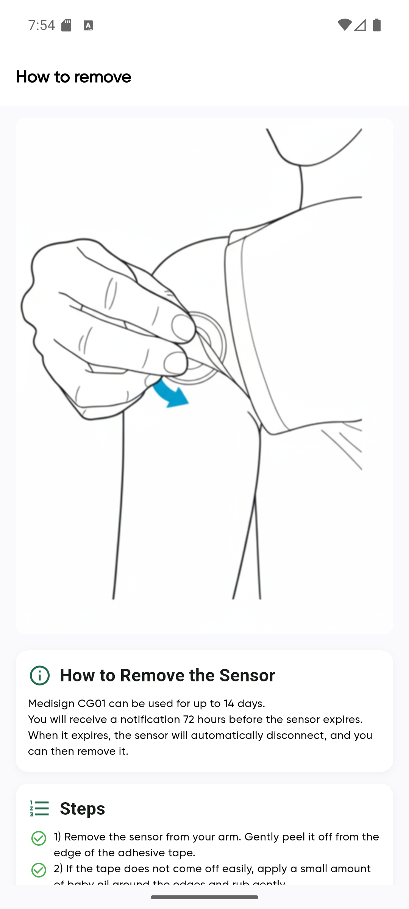 |
AR_ROOT/ar/root |
Alerts(AR_01_01). Mute all, Very Low/High/Low/Rate/System 알람 타입 목록. Settings Alarms 카드와 동일 설정. [요구] 3. Alarm / 3-1. AR_01_01 저장·화면 전환 |
Mute all alarms, Very Low, High, Low, Rapid Change, Signal Loss, Lock Screen 행 | [제목] Alerts (AR_01_01) [행] Mute all alarms → Ar0101MuteAllScreen [행] Very Low → AlarmTypeDetailPage(very_low) [행] High → AlarmTypeDetailPage(high) [행] Low → AlarmTypeDetailPage(low) [행] Rapid Change → AlarmTypeDetailPage(rate) [행] Signal Loss → AlarmTypeDetailPage(system) [행] Lock Screen → Ar0108LockScreenScreen |
AlertsRootPage |
ok | 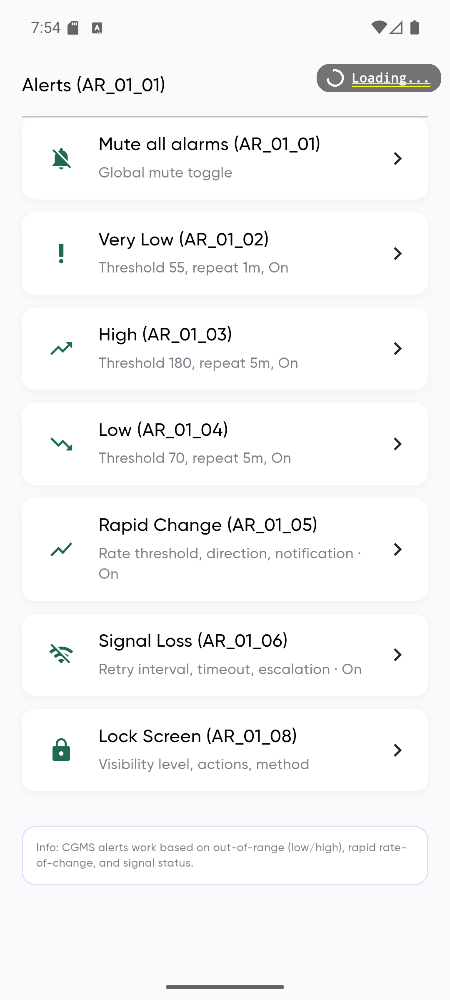 |
AR_01_01/ar/01/01 |
Mute all alarms. On/Off 저장·표시. alarmsMuteAll=true 시 소리·진동 비활성. [요구] 3. Setting Mute all 저장 / 반영 완료 2초 이내 |
Mute all 설명, 토글 | [표시] Mute all alarms 설명 [토글] Mute all alarms (alarmsMuteAll) → Switch.adaptive |
Ar0101MuteAllScreen |
ok | 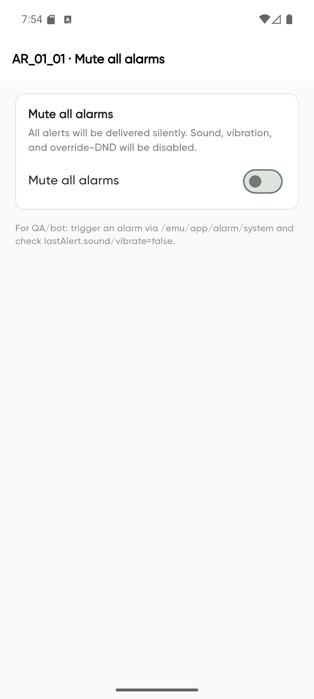 |
AR_01_02/ar/01/02 |
저혈당(54mg/dL 이하) 임계값·반복·소리·진동 설정. 로컬 캐시+서버 저장. [요구] AR_01_02 설정 범위 저장 |
임계값, 반복 간격, sound/vibrate 토글 | [토글] Enabled [입력] Threshold (num, mg/dL) [입력] Repeat minutes [토글] Sound [토글] Vibrate [입력] Quiet From/To [버튼] 반영 완료 → AlarmDetailPage 저장 |
AlarmTypeDetailPage(very_low) |
ok | 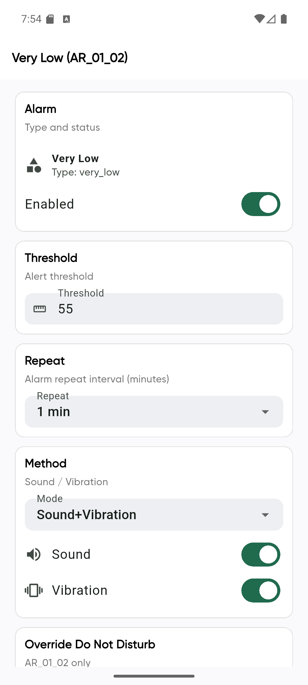 |
AR_01_03/ar/01/03 |
고혈당 임계값 설정. 메인 차트 고혈당 라인 반영. [요구] 4. 미구현 High 라인 반영 |
임계값, 반복, sound/vibrate | [토글] Enabled [입력] Threshold (고혈당, 120~300) [토글] Sound, Vibrate [버튼] 반영 완료 |
AlarmTypeDetailPage(high) |
ok | |
AR_01_04/ar/01/04 |
저혈당 임계값 설정. 메인 차트 저혈당 라인 반영. [요구] 4. 미구현 Low 라인 반영 |
임계값, 반복, sound/vibrate | [토글] Enabled [입력] Threshold (저혈당, 40~120) [토글] Sound, Vibrate [버튼] 반영 완료 |
AlarmTypeDetailPage(low) |
ok | 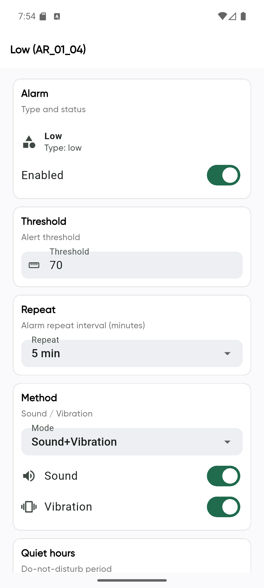 |
AR_01_05/ar/01/05 |
급변동(rate) 알림. 변화율 임계값 설정. [요구] Alarm |
변화율 임계값, 반복, sound/vibrate | [토글] Enabled [입력] Rate threshold [토글] Sound, Vibrate [버튼] 반영 완료 |
AlarmTypeDetailPage(rate) |
ok | 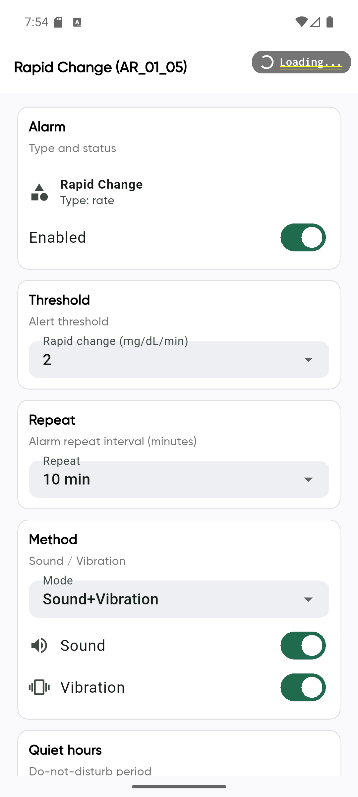 |
AR_01_06/ar/01/06 |
시그널 손실(system) 알림 설정. [요구] Alarm |
시스템 알림 토글, sound/vibrate | [토글] Enabled [토글] Sound, Vibrate [버튼] 반영 완료 |
AlarmTypeDetailPage(system) |
ok | 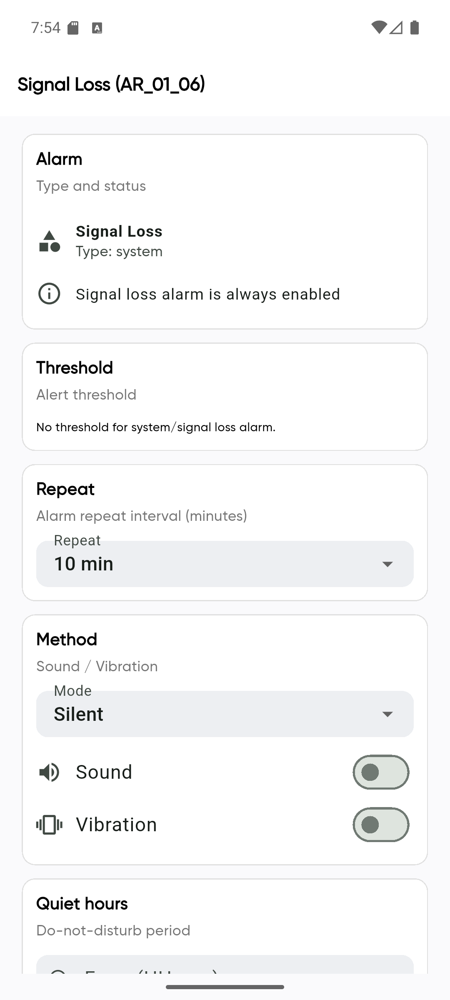 |
AR_01_08/ar/01/08 |
잠금화면 혈당 표시. ar0108Enabled 설정. [요구] Alarm |
잠금화면 표시 On/Off | [토글] 잠금화면 혈당 표시 (ar0108Enabled) | Ar0108LockScreenScreen |
ok | 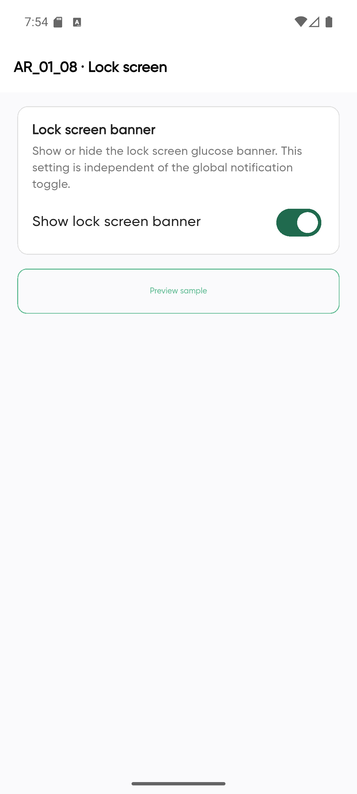 |
ST_01_01/settings |
General(Language, Region, Time format 24h/12h, Chart dot size, Notifications, Mute all). Units(Glucose mg/dL·mmol/L). Accessibility(High contrast, Larger font, Color blind). Alarms 목록. 사용자 카드(로그인 시 이름·이메일). [요구] 3. Setting 저장·반영 |
General·Units·Accessibility·Alarms 카드, 사용자 정보 | [카드] 사용자: displayName, email (로그인 시) [카드] General: - Language (en/ar) 드롭다운 - Region (KR 등) - Time format (24h/12h) - Chart dot size (1~10) - Notifications 토글 - Mute all alarms (AR_01_01) 토글 [카드] Units: Glucose unit (mg/dL / mmol/L) [카드] Accessibility: High contrast, Larger font, Color blind 토글 [카드] Alarms: High/Low/Rate/System 목록, 행 터치 시 상세 [카드] Data (debug): REFRESH, Open, Reset |
SettingsPage.build() |
ok | 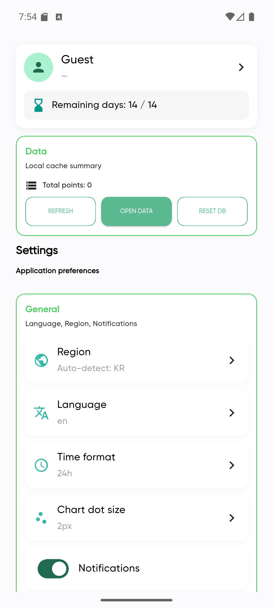 |